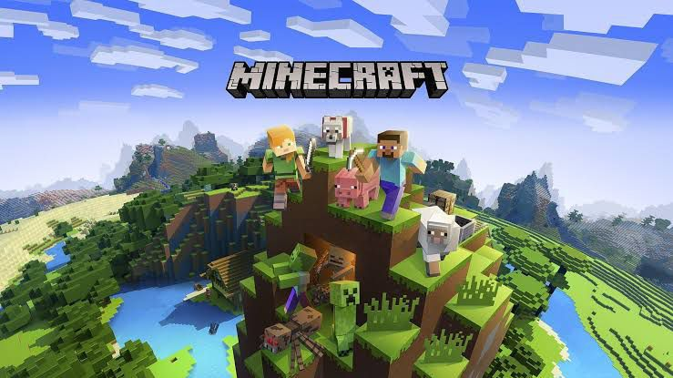
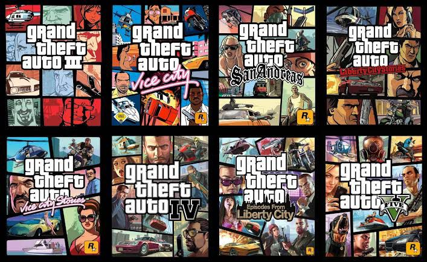
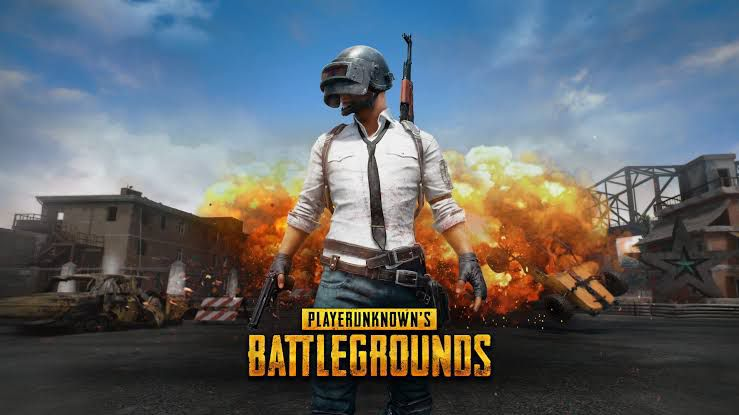
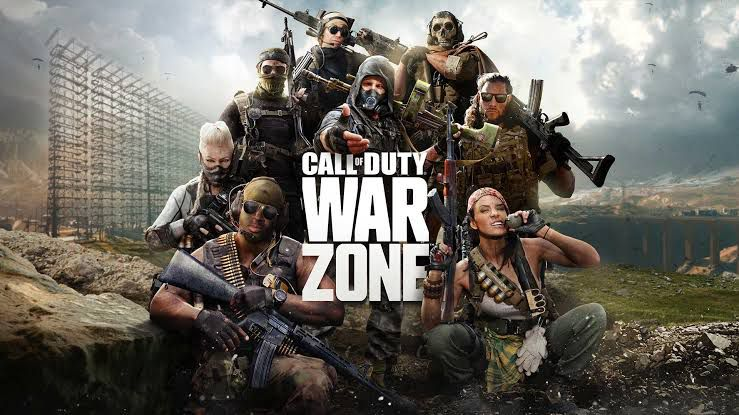
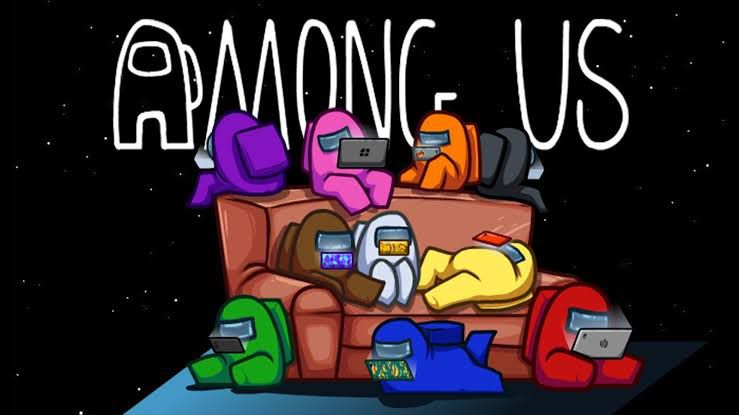
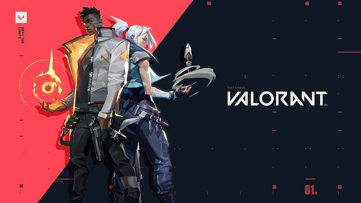
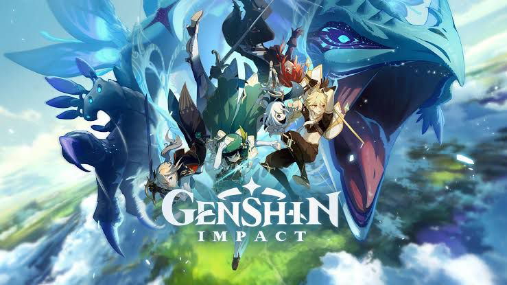
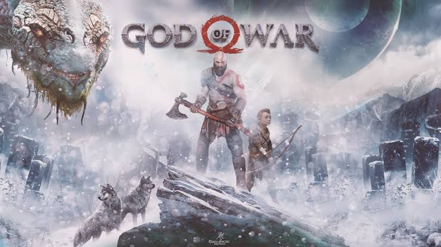
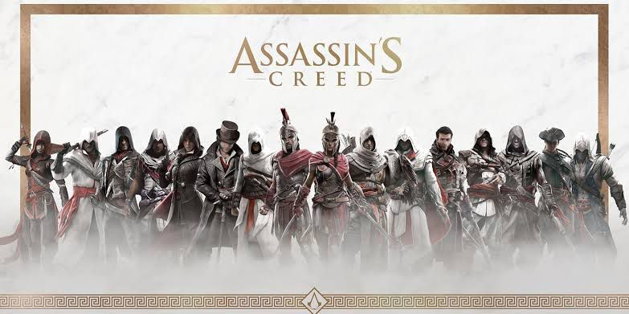
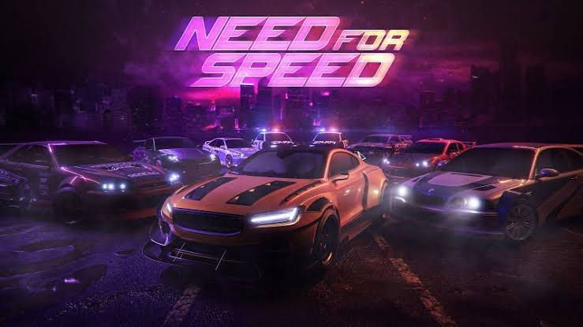

1. Minecraft

Explore infinite worlds and build everything from the simplest of homes to the grandest of castles. Play in creative mode with unlimited resources or mine deep into the world in survival mode, crafting weapons and armor to fend off dangerous mobs. Create, explore and survive alone or with friends on mobile devices or Windows 10.
2. Grand Theft Auto

Grand Theft Auto (GTA) is a series of action-adventure games created by David Jones and Mike Dailly. Later titles were developed under the oversight of brothers Dan and Sam Houser, Leslie Benzies and Aaron Garbut. It is primarily developed by British development house Rockstar North (formerly DMA Design), and published by its parent company, Rockstar Games. The name of the series references the term "grand theft auto", used in the United States for motor vehicle theft.
3. Player Unknowns Battleground

PlayerUnknown's Battlegrounds (PUBG) is an online multiplayer battle royale game developed and published by PUBG Corporation, a subsidiary of South Korean video game company Bluehole. The game is based on previous mods that were created by Brendan "PlayerUnknown" Greene for other games, inspired by the 2000 Japanese film Battle Royale, and expanded into a standalone game under Greene's creative direction. In the game, up to one hundred players parachute onto an island and scavenge for weapons and equipment to kill others while avoiding getting killed themselves. The available safe area of the game's map decreases in size over time, directing surviving players into tighter areas to force encounters. The last player or team standing wins the round.
4. Call of Duty: Warzone

Call of Duty: Warzone is a free-to-play battle royale video game released on March 10, 2020, for PlayStation 4, Xbox One, Microsoft Windows, PlayStation 5 and Xbox Series X. The game is a part of 2019's Call of Duty: Modern Warfare and is connected to 2020's Call of Duty: Black Ops: Cold War (but does not require purchase of either titles) and was introduced during Season 2 of Modern Warfare content. Warzone is developed by Infinity Ward and Raven Software (the latter later credited as the sole developer following the integration of Cold War's content) and published by Activision.Warzone allows online multiplayer combat among 150 players, although some limited-time game modes support 200 players. The game features both cross-platform play and cross-platform progression between three games.
5. Among Us

Play online or over local WiFi with 4-15 players as you attempt to prep your spaceship for departure, but beware as one will be an impostor bent on killing everyone!
Crewmates can win by completing all tasks or discovering and voting the impostor off the ship.
The Impostor can use sabotage to cause chaos, making for easier kills and better alibis.
6. Valorant

Valorant (stylized as VALORANT) is a free-to-play first-person hero shooter developed and published by Riot Games, for Microsoft Windows. First teased under the codename Project A in October 2019, the game began a closed beta period with limited access on April 7, 2020, followed by an official release on June 2, 2020. The development of the game started in 2014.
9. Genshin Impact

Step into Teyvat, a vast world teeming with life and flowing with elemental energy.
You and your sibling arrived here from another world. Separated by an unknown god, stripped of your powers, and cast into a deep slumber, you now awake to a world very different from when you first arrived.
Thus begins your journey across Teyvat to seek answers from The Seven — the gods of each element. Along the way, prepare to explore every inch of this wondrous world, join forces with a diverse range of characters, and unravel the countless mysteries that Teyvat holds...
8. God of War

God of War is an action-adventure game developed by Santa Monica Studio and published by Sony Interactive Entertainment (SIE). Released worldwide on April 20, 2018, for the PlayStation 4 (PS4), it is the eighth installment in the God of War series, the eighth chronologically, and the sequel to 2010's God of War III. Unlike previous games, which were loosely based on Greek mythology, this installment is loosely inspired by Norse mythology, with the majority of it set in ancient Scandinavia in the realm of Midgard. For the first time in the series, there are two protagonists: Kratos, the former Greek God of War who remains the only playable character, and his young son Atreus. Following the death of Kratos' second wife and Atreus' mother, they journey to fulfill her request that her ashes be spread at the highest peak of the nine realms. Kratos keeps his troubled past a secret from Atreus, who is unaware of his divine nature. Along their journey, they encounter monsters and gods of the Norse world.
9. Assassin's creed Franchise

Assassin's Creed is an open-world action-adventure stealth video game franchise published by Ubisoft and developed mainly by its studio Ubisoft Montreal using the game engine Anvil and its more advanced derivatives. Created by Patrice Désilets, Jade Raymond, and Corey May, the Assassin's Creed series depicts a fictional millennia-old struggle between the Assassins, who fight for peace with free will, and the Templars, who desire peace through order and control. The series features historical fiction, science fiction and fictional characters intertwined with real-world historical events and figures. For the majority of time players control an Assassin in the past history, while also playing as Desmond Miles or an Assassin Initiate in the present day, who hunt down their Templar targets. The series took inspiration from the novel Alamut by the Slovenian writer Vladimir Bartol, based on the historical Hashashin sect of the medieval Middle East, while building upon concepts from the Prince of Persia series.
10. Need for Speed Franchise

Need for Speed (NFS) is a racing video game franchise published by Electronic Arts and currently developed by Criterion Games, the developers of Burnout. The series centers around illicit street racing and in general tasks players to complete various types of races while evading the local law enforcement in police pursuits. The series released its first title, The Need for Speed, in 1994. The most recent game, Need for Speed: Hot Pursuit Remastered, was released on November 6, 2020. The next game in the series, which is currently still under development, is expected to be released either in late 2021 or in early 2022.